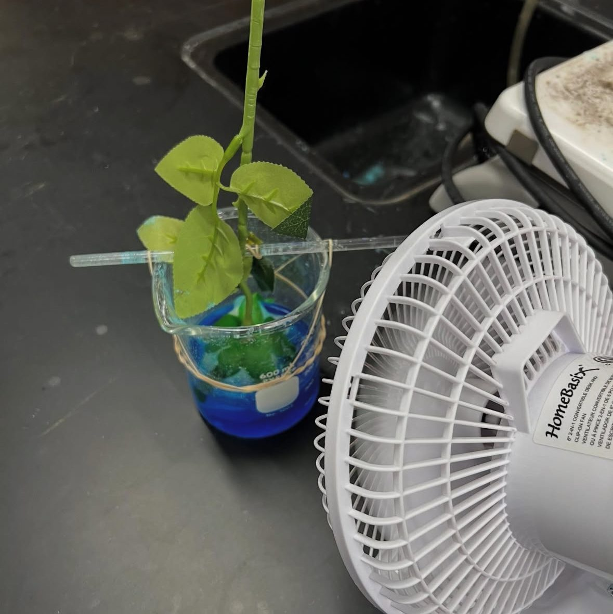
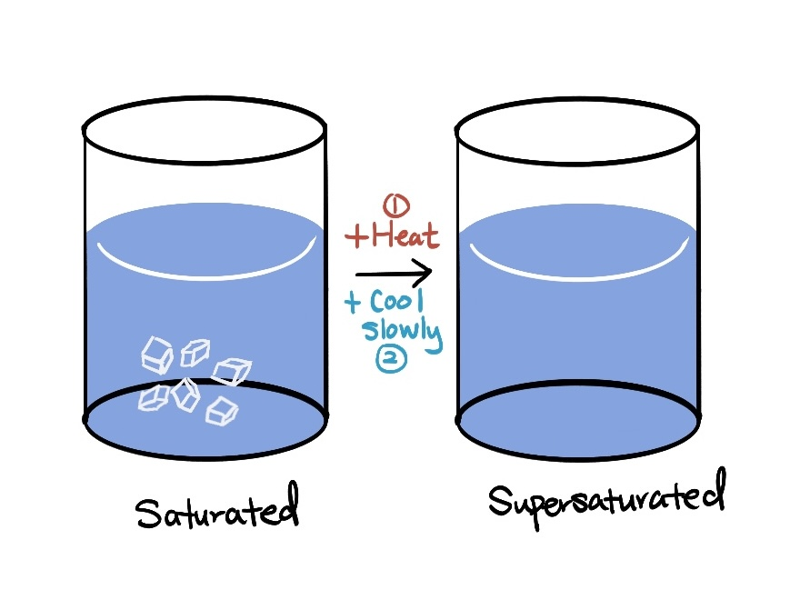
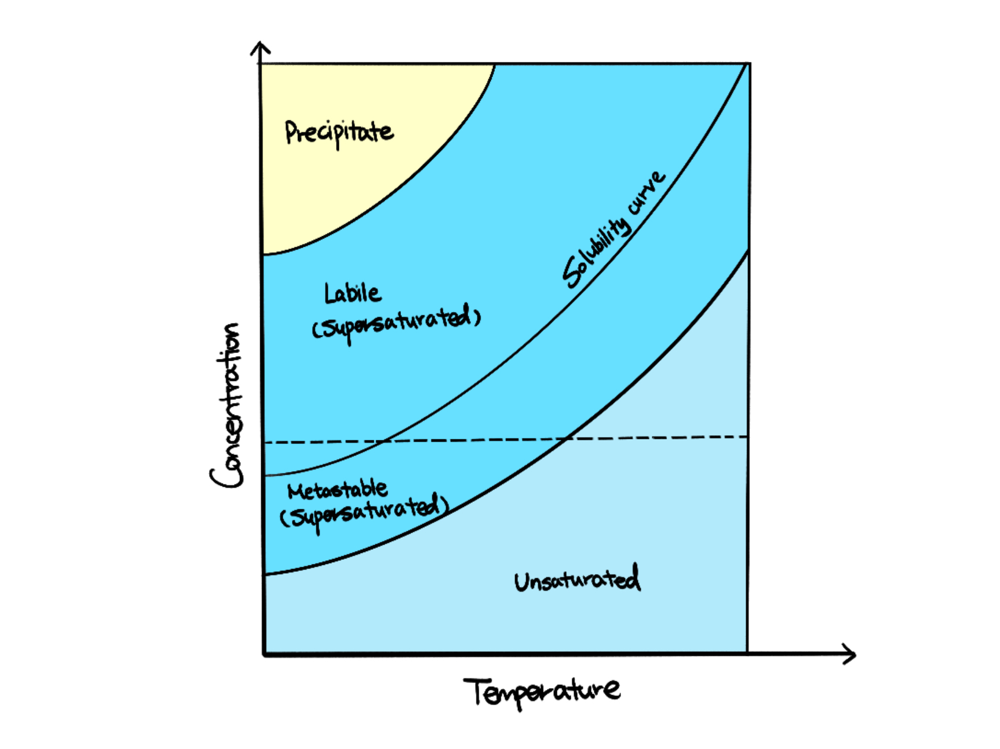
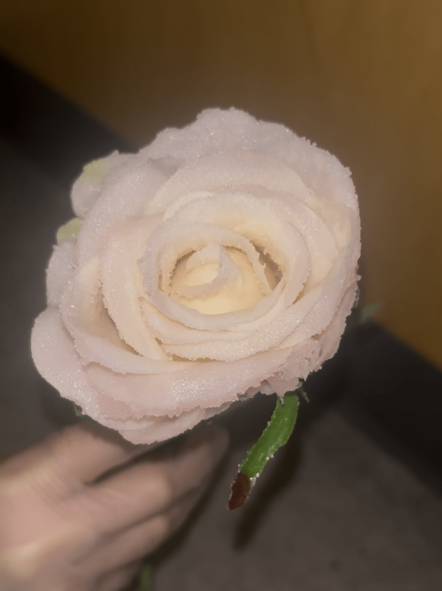

Have you ever created crystallized roses? Those exotic flowers are made through precipitation reaction of different types of solid solutions. Explore the beauty of chemistry through this easy experiment!
Background Information
Crystals are formed as atomic molecules are arranged in a packed and repeating structure. Most crystal solids can be dissolved as temperature increases until solution reaches a saturated state, where no more solids can be dissolved. Under higher temperatures, supersaturated solution is created as more solid solutes can be dissolved than normal.
Since supersaturated solution is very unstable, they will form precipitate again after cooling down rapidly. In this experiment, crystalline solids are visible on flowers coated with supersaturated solution.
Purpose
The objective of the lab is to observe crystal formation through the cooling of a supersaturated solution, exploring concepts of solubility and phase diagram.
Wear lab safety googles and gloves as some chemicals may be poisonous.
Prepare hot plate beforehand.
Procedure
Add 300 mL of water into beaker
Start heating the water by transferring the beaker onto the hot plate
When the water is heated but not boiling, add the solid (of your choice) into the beaker
Dissolve the solids using a stirring rod
Repeat steps 3-4 until no more solid can be dissolved
Dip the petals of the fake rose into the solution and take it out after few seconds
Turn on the fan to blow the rose covered in solution for 10 seconds
Repeat steps 6-7 five times
Turn off the hot plate
Leave the rose inside the solution for 1 hour
Take the rose out and dry it using the fan
And that’s your ending product!!

How Does This Work?
By heating the solution then cooling slowly, the solution reaches a state called “supersaturated� which means that the solution dissolved more solid than it would at normal temperature.
In this case, when you dip the flower and take it out, the fan cools the supersaturated solution left on the flower to become solid again. That’s the crystals that you observe on the flower! By repeating the steps multiple times, more colored crystals will form on the flower. Lastly, the final step of leaving the flower in the beaker helps more solid to precipitate from the cooling of solution.

Solubility Curve
Let’s take a look at the solubility curve. As temperature increases, more heat is added to increase solubility from the curve with positive slope. During the process of cooling, a supersaturated solution is created while you move left on the diagram, depicted by the shaded region. This is the unstable state where more solutes are dissolved than it should.

Further Explorations
You can also try using food coloring and other metal solutions (like potassium aluminum sulfate) to create different colored flowers.

Acknowledgements
Experimentation was conducted with my school’s chemistry club.